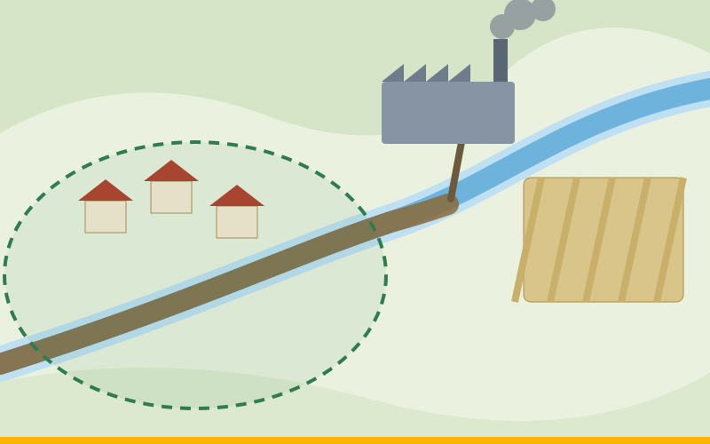
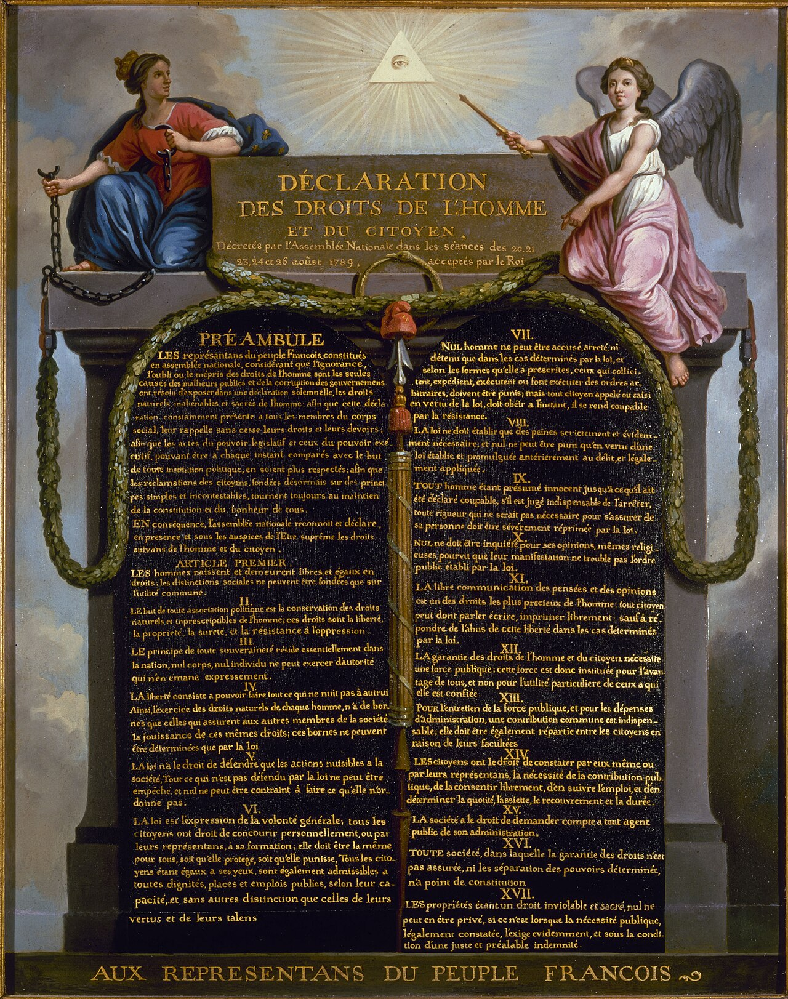
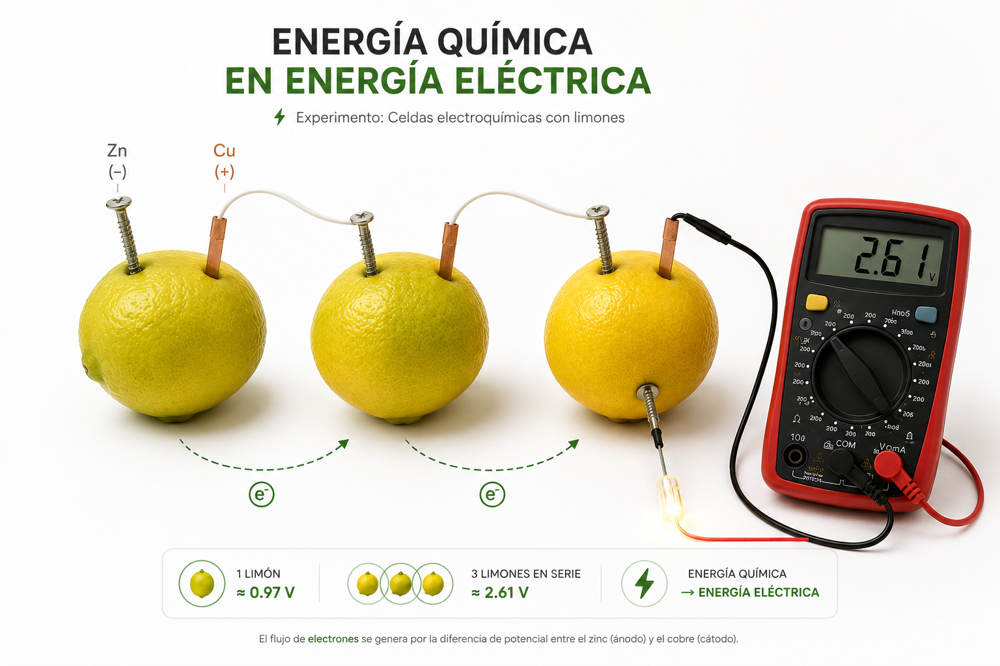

Elige un trabajo
Cada trabajo es una página independiente. Filtra por institución o busca por tema, curso o formato.

01 Recurso interactivo NuevoDerecho Constitucional Colombiano I: el caso de la vereda El Encanto
Análisis dogmático de un conflicto ambiental a la luz de la Constitución de 1991, con cinco recursos interactivos: territorio y derechos, problema jurídico, ponderación, audiencia y ruta judicial.
Abrir trabajo
02 Recurso interactivoDerecho Constitucional General: del Estado de Derecho al Estado Social de Derecho
Doce hitos del constitucionalismo inglés, estadounidense, francés y español, con documento escrito y matriz comparativa crítica de los tres modelos de Estado.
Abrir trabajo 03
Recurso interactivo
03
Recurso interactivo
Historia y Teoría de las RRII: una mirada evolutiva (1914 – presente)
Doce hitos del sistema internacional con análisis politológico y un estudio de caso sobre la crisis venezolana y el régimen internacional de asilo.
Abrir trabajo
04 Informe de laboratorioGeneración de energía eléctrica con limones
Informe experimental sobre celdas electroquímicas caseras con limones, alambre de cobre y tornillos metálicos, con video e informe en PDF.
Abrir trabajo 05
Ensayo visual
05
Ensayo visual
De la Polis al Estallido Social
De Aristóteles, Rousseau y Marx al Paro Nacional de 2021: filosofía política y movimientos sociales en Colombia.
Abrir trabajo 06
Podcast
06
Podcast
Política en la era digital
Inteligencia artificial, redes sociales y big data frente a la democracia, la participación y el poder político.
Abrir trabajo 07
Mini documental
07
Mini documental
La Ciencia Política en Colombia
Conflicto armado, paz y participación ciudadana, con análisis académico y entrevista.
Abrir trabajo 08
Sitio interactivo
08
Sitio interactivo
Cartografía social del pensamiento político latinoamericano
Recorrido por el pensamiento político de América Latina, desde sus orígenes hasta la contemporaneidad.
Abrir trabajoNo hay trabajos que coincidan con la búsqueda.